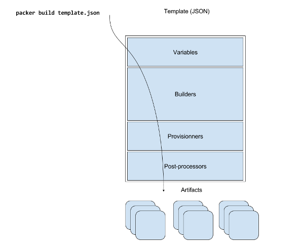

Automate Your Virtual Machine Templates Creation With Packer
Table of contents
Context
If you operate an IaaS infrastructure, either private (OpenStack, OpenNebula, …) or public cloud (AWS, GCP, …), you certainly already wondered how to properly bootstrap your first virtual machines templates. IaaS solutions are often linked to a public repository of basic virtual machines images that can be used to quickly start deploying instances. If this is good for initial tests, it’s not that safe to bootstrap all your instances from a guest operating system someone you don’t has built for you. You then certainly want to build your own images and you want that part to be automated to (why running a fully automated infrastructure and still provisioning guest OS by hand ?). Why not use PXE for this ? Well, you’d have to deploy and maintain a dhcp and http server just for that purpose. Deploying new distributions and their releases on that server is not that cumfortable neither.
At this point you could really be interested by Packer. The purpose of packer is to permit generating virtual machines (or containers) images templates from a simple json file. It is developed by Hashicorp, the same company who provides Vagrant, Terraform, Vault, Nomad, etc… Yes, they are really good people. What’s interesting in this product is that you can now versionize your templates of templates (json file is called a template) and let’s say have a git repository with all those templates. Pretty cool isn’t it ? There’s more: Packer has a plugin system, so every component I’ll talk about in this article can be extended to fit your custom needs.
Behavior
Packer has multiple components, most of them are managed in sections of the json template. You can define variables, that will be used in other sections, in the variables section (surprise !). The builders section defines for which platform the image will be build, and how it will be done (image format, size, parameters for the embedded http server, commands to use on boot, …). This section is the only one mandatory. The provisionners section defines what actions to run after the virtual machine is up and reachable by Packer and before it is shut off to become a static template. Post-processors section defines what to do with artifacts. Artifacts are the files resulting from the build (including the template itself).

Builders are multiple: OpenStack, Amazon EC2, GCP, Qemu, Virtualbox, Docker, LXC, … you can find more about them here. Provisioners exist for Ansible, Puppet, Chef, shell scripts and so on… Post-processors permit to push images to Vagrant Atlas, Amazon, Google cloud, Docker public images repository… As I said, you can create custom builders, provisioners and post-processors thanks to the Packer plugin system. Usage
Here I’ll describe an sample build for a debian 9 image on Qemu/KVM. This is a very simple example that doesn’t require any variable, provisioner or post-processor, but you can find a lot of more complete examples on github.
You need two files: the json template and a preseed file (because it is debian):
$ tree
.
├── debian9-kvm.json
├── http
│ └── preseed.cfg
└── packer_cache
├── 9a83cac10fb8aeb1f51ac47aaa6e942d971db3fa8be45f88da37ae832a681f15.iso
└── b91b9345dfc29da84058f9f1ee1ab4c27c22efd48a43b54b5432ddc0693e4ab2.isoHere we put the preseed file in a separate http folder. Notice the packer_cache folder, it’s where packer puts iso images he already downloaded, to avoid downloading them a second time.
I’ve not tested every Builder available in Packer, but in this example (Qemu/KVM builder) the workflow is approximatively the following:
- Packer downloads an iso file you specified in the template
- A small http server is bootstraped, hosting the preseed file
- Packer boots the virtual machine with the iso attached
- A tiny VNC client is launched and attached to the virtual machine
- Packer passes boot commands specified in the template
- Packer attempts regularily to connect via ssh to the Virtual Machine, until the ssh timeout is reached (you can change this in the template)
- After successful ssh connection, the provisionners are ran, in this example there are none
- Artifacts are generated: here it’s only the template, that goes in the debian9-template folder
- Post-processors are called, here there is nothing to do
Here is the json template:
{
"builders":
[
{
"type": "qemu",
"iso_url": "http://cdimage.debian.org/pub/debian-cd/current/amd64/iso-cd/debian-9.2.1-amd64-netinst.iso",
"iso_checksum": "ddd8f6542dae8baf410e90b9ae0fe986",
"iso_checksum_type": "none",
"output_directory": "debian9-kvm",
"shutdown_command": "shutdown -P now",
"disk_size": 5000,
"format": "qcow2",
"headless": false,
"accelerator": "kvm",
"http_directory": "http",
"http_port_min": 10082,
"http_port_max": 10089,
"ssh_host_port_min": 2222,
"ssh_host_port_max": 2229,
"ssh_username": "root",
"ssh_password": "root",
"ssh_port": 22,
"ssh_wait_timeout": "10000s",
"vm_name": "debian9-template",
"net_device": "virtio-net",
"disk_interface": "virtio",
"boot_wait": "5s",
"boot_command": [
"<esc><wait>",
"install <wait>",
"preseed/url=http://{{ .HTTPIP }}:{{ .HTTPPort }}/preseed.cfg <wait>",
"debian-installer=en_US <wait>",
"locale=en_US <wait>",
"auto <wait>",
"kbd-chooser/method=us <wait>",
"keyboard-configuration/xkb-keymap=fr <wait>",
"netcfg/get_hostname={{ .Name }} <wait>",
"netcfg/get_domain=b0rk.in <wait>",
"fb=false <wait>",
"debconf/frontend=noninteractive <wait>",
"console-setup/ask_detect=false <wait>",
"console-keymaps-at/keymap=fr <wait>",
"<enter><wait>"
]
}
]
}And the preseed file:
d-i pkgsel/install-language-support boolean false
# locale
d-i debian-installer/locale string en_US.UTF-8
# keyboard
d-i keyboard-configuration/xkb-keymap select fr
# timezone
d-i time/zone string Europe/Paris
# Controls whether to use NTP to set the clock during the install
d-i clock-setup/ntp boolean true
# apt
d-i mirror/country string manual
d-i mirror/http/hostname string ftp.fr.debian.org
d-i mirror/http/directory string /debian
d-i mirror/http/proxy string
d-i apt-setup/use_mirror boolean true
# users
d-i passwd/root-password password root
d-i passwd/root-password-again password root
d-i passwd/make-user boolean false
# partitioning
d-i partman-auto/method string regular
d-i partman-auto/choose_recipe select atomic
d-i partman-partitioning/confirm_write_new_label boolean true
d-i partman/choose_partition select finish
d-i partman/confirm boolean true
d-i partman/confirm_nooverwrite boolean true
apt-cdrom-setup apt-setup/cdrom/set-first boolean false
# software
tasksel tasksel/first multiselect standard
d-i pkgsel/include string htop munin-node mtr-tiny ntp openssh-server postfix tcpdump tmux vim
popularity-contest popularity-contest/participate boolean false
# postfix
postfix postfix/main_mailer_type select Internet Site
postfix postfix/mailname string test.b0rk.in
# grub
d-i grub-installer/only_debian boolean true
d-i grub-installer/bootdev string /dev/vda
# script
d-i preseed/late_command in-target sed -i 's/#PermitRootLogin prohibit-password/PermitRootLogin yes/' /target/etc/ssh/sshd_config
# finish
d-i finish-install/reboot_in_progress noteTo run this example you simply need to type:
packer build debian9-kvm.jsonYou should then get a VNC client window showing the installation process. The output on your terminal should be, in the end of the build:
qemu output will be in this color.
Warnings for build 'qemu':
* A checksum type of 'none' was specified. Since ISO files are so big,
a checksum is highly recommended.
==> qemu: Downloading or copying ISO
qemu: Downloading or copying: http://cdimage.debian.org/pub/debian-cd/current/amd64/iso-cd/debian-9.2.1-amd64-netinst.iso
==> qemu: Creating hard drive...
==> qemu: Starting HTTP server on port 10084
==> qemu: Found port for communicator (SSH, WinRM, etc): 2225.
==> qemu: Looking for available port between 5900 and 6000 on 127.0.0.1
==> qemu: Starting VM, booting from CD-ROM
==> qemu: Waiting 5s for boot...
==> qemu: Connecting to VM via VNC
==> qemu: Typing the boot command over VNC...
==> qemu: Waiting for SSH to become available...
==> qemu: Connected to SSH!
==> qemu: Gracefully halting virtual machine...
==> qemu: Converting hard drive...
Build 'qemu' finished.
==> Builds finished. The artifacts of successful builds are:
--> qemu: VM files in directory: debian9-kvmIf you have run this example you certainly noticed the crappy sed command in my preseed file, the purpose is to allow Packer to connect via ssh as root user. This is bad, but it is a basic example, feel free to do things better (you should).
You may also have noticed that the beginning of the installation, passing the boot commands is a bit long (characters are typed one by one with a perceptible time between them). That’s because of the instructions from the template. It can surely by tweaked to get a bit faster, however, it seems necessarily to prevent VNC lags from skipping characters and make the installation fail. I’d like to find a way to do this faster but properly.
Hope it helps !